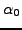
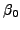

The sampling profile is an essential part of the sig computation. All parameters to describe the influence of the time series sampling in Fourier space is entirely contained in the three parameters , , and  . The values of and are measures for the maximum and minimum sig for all phase angles at a given frequency, and the angle
. The values of and are measures for the maximum and minimum sig for all phase angles at a given frequency, and the angle  determines the phase angle where maximum sig is obtained at the frequency under consideration. A detailed description is given by Reegen (2007). If the keyword profile is provided in the .ini file, the sampling profile for the given time series is written to the file profile.dat. The four columns refer to
determines the phase angle where maximum sig is obtained at the frequency under consideration. A detailed description is given by Reegen (2007). If the keyword profile is provided in the .ini file, the sampling profile for the given time series is written to the file profile.dat. The four columns refer to
 [rad].
[rad].
Example. In the file output.ini, the keyword profile is given and forces SIGSPEC to generate an output file output/profile.dat representing the sampling profile displayed in Fig.12.


Next: Sock Diagram
Up: Analysis of the Time-domain
Previous: Spectral window
Contents
Piet Reegen
2009-09-23